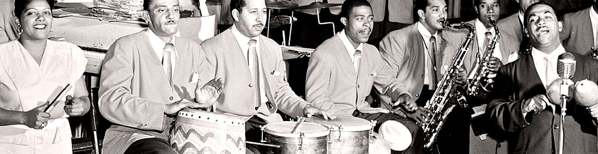
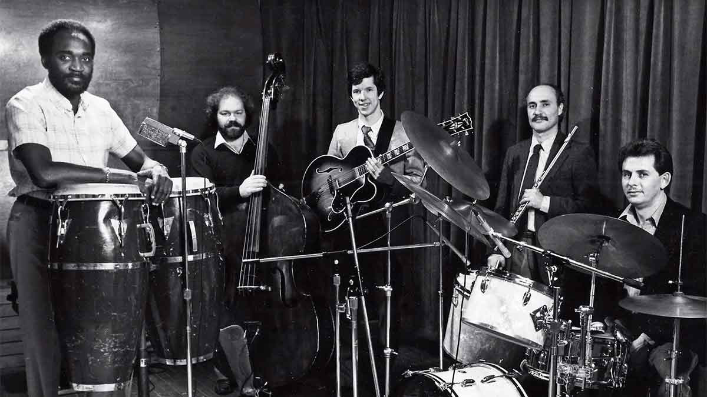
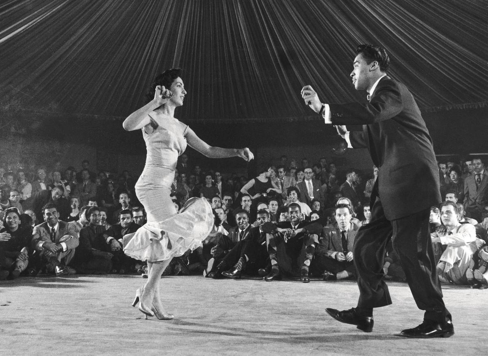
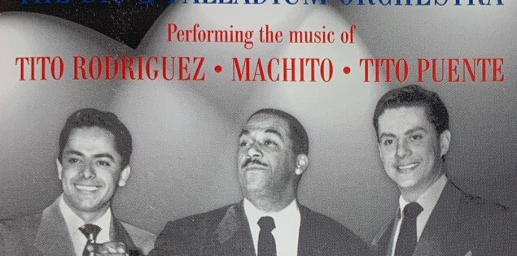
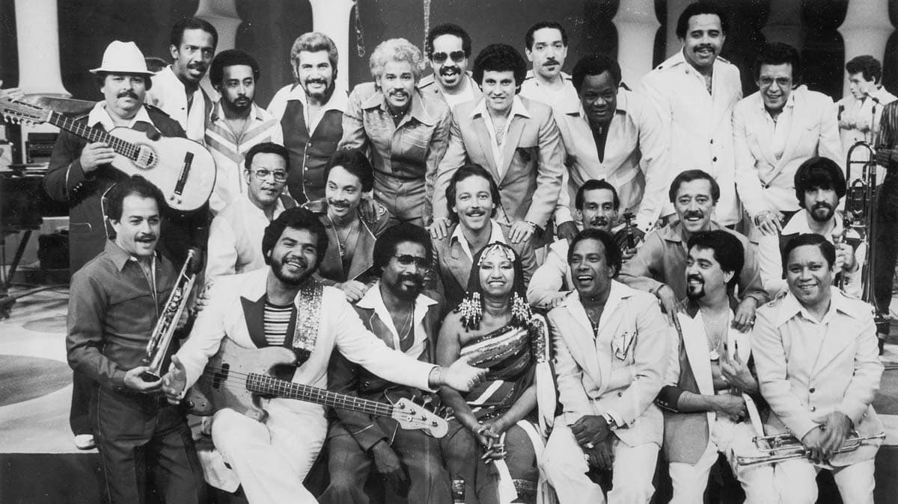

Durante las décadas de 1940 y 1950, Nueva York se convirtió en un punto de encuentro para músicos y comunidades provenientes del Caribe. La migración puertorriqueña, especialmente, transformó los barrios de la ciudad y fortaleció sus espacios culturales. En ellos convivían ritmos cubanos como el son y el mambo con las tradiciones musicales puertorriqueñas y la influencia del jazz estadounidense.
Esta mezcla no significó la desaparición de las raíces originales, sino su transformación en un entorno urbano nuevo. Los arreglos de las grandes orquestas, los metales, los timbales y las congas crearon un sonido enérgico que acompañaba la vida nocturna de la ciudad. Antes de llamarse salsa, esta música ya estaba construyendo su propio lenguaje.


En el corazón de Manhattan, el Palladium Ballroom se convirtió en uno de los grandes escenarios de la música latina. Durante los años cincuenta, sus pistas reunieron a públicos de diferentes orígenes alrededor del mambo y otros ritmos bailables. Allí brillaron tres figuras fundamentales: Machito, Tito Puente y Tito Rodríguez, conocidos por liderar las orquestas que dominaron aquella escena.
Cada uno aportó una personalidad particular. Machito y sus Afro-Cubans fueron fundamentales en la integración de ritmos afrocubanos y arreglos de jazz; Tito Puente destacó por su virtuosismo con los timbales y su capacidad como director; y Tito Rodríguez combinó el liderazgo orquestal con su estilo vocal. Sus agrupaciones impulsaron una cultura de competencia musical en la que las orquestas buscaban superar a sus rivales tanto en el escenario como en la pista de baile.
El Palladium demostró que la música latina podía ocupar un lugar central en la vida cultural de Nueva York. Sin embargo, aquella época no era todavía la explosión salsera de los años setenta: era el terreno fértil sobre el cual crecería.

A medida que avanzaban los años sesenta, la escena musical latina comenzó a transformarse. El cierre del Palladium en 1966 simbolizó el final de una etapa dorada para el mambo neoyorquino, pero no el final de la música latina en la ciudad. En barrios como el Spanish Harlem y el Bronx, las nuevas generaciones crecían entre los sonidos del Caribe y las realidades de una ciudad marcada por la desigualdad, la migración masiva. El jazz y las grandes orquestas seguían siendo parte de la herencia musical, mientras el son, la guaracha, el guaguancó y otros ritmos afrocubanos alimentaban nuevas expresiones. A ello se sumaban distintas experiencias culturales latinas que encontraban expresión en la música urbana de aquella época. En 1964, Johnny Pacheco y Jerry Masucci habían fundado Fania Records, sello que comenzaría a reunir y proyectar a una nueva generación de artistas. La semilla de la siguiente etapa ya estaba plantada: faltaba reunir esas voces en un mismo escenario.
“Quítate tú pa’ ponerme yo.”